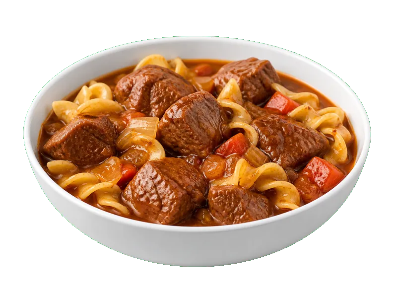

Polskie obiadki
Gulasz wołowy z makaronem
Gulasz wołowy z makaronem to produkt z kategorii Polskie obiadki. Na 100 g znajdziesz 8 g białka (proteinów), 125 kcal kalorii, 15 g węglowodanów oraz 4 g tłuszczu — idealne dane przy zdrowym odżywianiu, odchudzaniu lub budowie masy mięśniowej. Współczynnik ok. 15.6 kcal na 1 g białka pomaga porównać gęstość odżywczą. Na 100g dania gotowego.
Kalorie125 kcalna 100 g
Białko / proteiny8 g
Węglowodany15 g
Tłuszcz4 g
Cena (szac.)~1,54 złza 100 g
Ceny zaktualizowano: maj 2026 (szacunek — ceny w popularnych supermarketach)
Porcja: porcja (350g) — 28.0 g białka, 52.5 g węgli, 14.0 g tłuszczu (kalorie podane wyłącznie na 100 g). Cena porcji (szac.): ~5,39 zł.
Szczegółowe składniki odżywcze na 100 g
| Wartość energetyczna (kalorie) | 125 kcal |
|---|---|
| Białko (proteiny) | 8 g |
| Węglowodany | 15 g |
| Tłuszcz | 4 g |
| Tłuszcze nasycone | 1.5 g |
| Tłuszcze nienasycone | 2.5 g |
| Witaminy i minerały | Żelazo, Tiamina (B1), Potas |
| Współczynnik kcal / 1 g białka | 15.6 |
| Cena produktu (szac. za 100 g) | ~1,54 zł |
| Cena za 100 g białka (szac.) | ~19,25 zł |